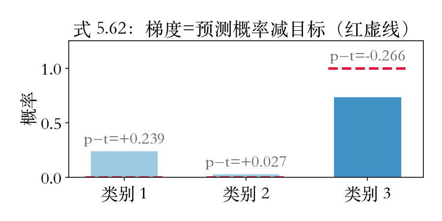
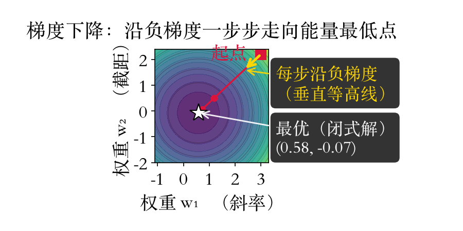
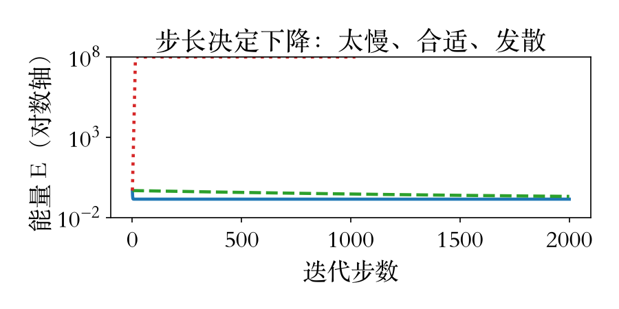

第 5 章 Deep Learning · 损失函数
网络怎么学：三步训练
训练三件事：定损失、算梯度、更新权重。
分类网络最后接 softmax，损失用交叉熵。
多类交叉熵：正确类概率取对数再求和（式 5.54）。
概率 p_nk 是网络对第 n 个样本第 k 类的估计。
依据：原书第 280 页
三步
定损失：给网络出考卷
算梯度：看每根旋钮往哪拧
迭代：沿负梯度一步步走
正课第三十五集
01 / 9
单样本形式 · 回归损失 · 原书第 280 页
两种考卷：交叉熵与 L2
单样本交叉熵：log Z 减正确类得分（式 5.55）。
回归常用 L2：输出减目标，平方求和（式 5.56）。
有离群值或大错，可换 L1 等鲁棒范数。
式 5.56 印刷负号是笔误，按无负号讲。
依据：原书第 280 页
E_n = log Z_n − s_n^{t_n}
Z_n = Σ_j exp s_nj；式 5.56 与 5.63 只差正常数 2
正课第三十五集
02 / 9
置信度校准 · 损失家族 · 原书第 280–282 页
校准、感知与损失家族
输出当概率读，不等于置信度校准。
校准可乘温度；GrokNet 用它改属性概率。
感知损失：比较中间层响应，或另训判别网络。
对比损失拉近相似、推开不相似；InfoNCE 借 softmax。
依据：原书第 280–282 页
损失家族
交叉熵：分类
L2、L1：回归
对比、三元组：学距离
感知、对抗：生成图像
正课第三十五集
03 / 9
Weight initialization · 原书第 283 页
权重从哪来：He 初始化
小随机数打破对称，避免梯度全为零。
深网络要让各层方差大体不变。
Glorot-Bengio：方差取入口数倒数，假设 tanh。
ReLU 下 He：方差取入口数一半的倒数（式 5.61）。
依据：原书第 283 页
V_l = 2 / n_l
n_l：入口连线数（fan-in）；He initialization
正课第三十五集
04 / 9
反向传播开场 · 原书第 284 页
反向传播：从输出往回走
层数、正则、损失、初始化备好，就能训练。
用梯度下降或其变体，迭代修改权重。
链式法则从输出往回走，就是反向传播。
前向算激活一次；反向图同样广度优先。
依据：原书第 284 页
两条遍历
前向：激活逐层算，后面复用
反向：算损失对权重和输入的导数
这些导数，原书叫误差
正课第三十五集
05 / 9
损失梯度 · 式 5.62/5.63 · 原书第 284–285 页
梯度：预测减目标
交叉熵对 softmax 得分求导：p − t（式 5.62）。
L2 对输出求导：预测减目标（式 5.63）。
三类小例：p=0.239/0.027/0.734，答案第三类。
数值差分与解析梯度偏差 10⁻¹⁰ 量级。
依据：原书第 284–285 页；本集实验

三类小例：预测概率减目标（红虚线为目标）｜程序生成，未用教材或论文原图
正课第三十五集
06 / 9
梯度下降实验 · 原书无此数值演示
步长：太大就爆炸
二参数直线场：安全步长 0.25，十来步到闭式解。
前十来步能量每步下降，之后停在谷底。
η=1.5 越界：第 6 步破出发值 1000 倍。
蓝实=0.25 合适／绿虚=0.0002 太慢／红点=1.5 发散。
依据：本集实验

能量等高线与路径：η=0.25，14 步到谷底｜程序生成，未用教材或论文原图

步长对比：蓝实=0.25／绿虚=0.0002／红点=1.5｜程序生成，未用教材或论文原图
正课第三十五集
07 / 9
三步收束 · 原书第 280–285 页
三步收束
定损失：交叉熵（5.54/5.55）、L2（5.56）。
算梯度：最顶层都是预测减目标（5.62/5.63）。
迭代：沿负梯度走，步长越界就爆炸。
中间层几百万权重的梯度，靠反向传播。
依据：原书第 280–285 页
三步
损失：考卷
梯度：方向
更新：一步步走
正课第三十五集
08 / 9
作业与移交 · 原书第 285–287 页
作业与下一集
手算：全零得分，写出对三个得分的梯度。
脚本：0.5 一步到底、1.0 临界、1.5 爆炸。
下一集：链式法则与误差回传（5.64–5.70）。
再下一集：训练与优化（5.3.6）。
依据：原书第 285–287 页
下一集
误差 = 损失对输出的偏导 × 激活斜率
权重梯度 = 输入激活 × 误差
原书：与赫布法则密切相关
正课第三十五集
09 / 9